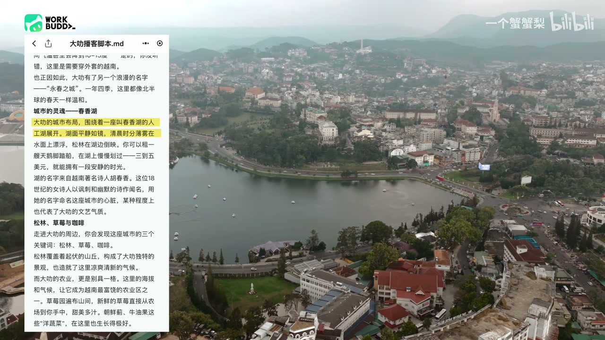
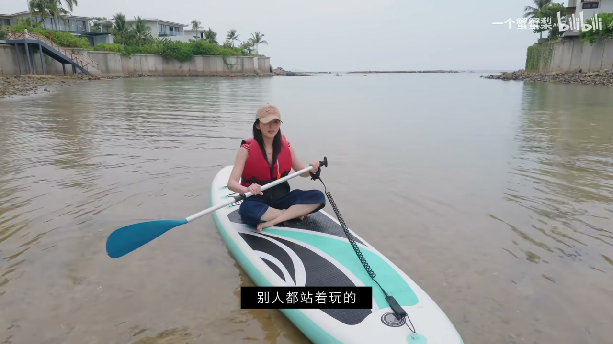

Walk Smart Play Hard：AI 行程规划
00:00去越南前挺头疼的——当大家还在聊 Work Hard Play Hard，博主已经开始一种全新的旅行方式：Walk Smart Play Hard。
00:47邂逅世界解锁新地标：越南。上海飞过来花了七个小时（没直飞，广州转机），落地芽庄机场。
01:24金兰湾在战争年代是深水港，水特别深什么船都能停，连航空母舰都可以；这几年慢慢开了很多度假酒店，比热闹的芽庄市区安静，一整片沙滩绵延 13 公里。
01:48这次带新队友 walkbody：出发前把邂逅世界的创作思路做成 skill，让它沿用这个思路做了越南五天行程规划，生成完整行程文档存在腾讯文档——出门只用带一个手机。
AI 随身助理：选餐厅 / 翻译 / 算钱
02:33walkbody “他真的跟个人一样，完全知道我的喜好和位置”：先根据距离要求选出 20 家餐厅，精准计算车程、跟 TripAdvisor 交叉点评，最终从 8 家筛选出 3 家决赛。
03:17出来之前已经把 walkbody 连接到了微信——相当于出门随身带一个助理：菜单拍照直接推荐爱吃的菜，还能用越南语写全熟备注，中越文对照直接给店员看。
04:18越南算钱小技巧：把 1 去掉然后乘 3（150 万越南盾 ≈ 500 块人民币），“感觉现在自己非常富有”。
08:44学越南语点菜：Dui Ga 鸡腿、ChangGa 鸡翅、GaCai 鸡丝、Fo 米粉（介于一声二声之间）——烤米饼（越南披萨）超级多人在排队。
大叻：永春之城 + 法式老建筑
04:25从芽庄开到大叻，行程将近 4 小时，包车 140 万盾。
05:19大叻是法国人用 100 年时间雕琢出来的永春之城，藏在云雾中的山城，坐落在海拔 1500 米的朗边高原上，被绵延的松林环抱——像被上帝藏起来的凉爽绿洲，没有芽庄那么潮湿闷热。
05:52住的酒店是 1893 年一个法国医生建的一片别墅群，藏在半山上，一栋栋法式小楼散落在树林里，房子已经快 100 年历史。
10:24“这个树后面有一个塔，特别像巴黎铁塔——东方小巴黎”。
大叻火车站 + 春香湖
10:51火车站只能现金买票（人民币也可以，六哥去换钱）。
11:25大叻火车站建于上世纪 30 年代，法国殖民时期修建，让人想到欧洲小火车站：黄色墙面、彩色玻璃、标志性尖顶，建筑师还把越南高原传统建筑元素融合进去，有很特别的混合感。以前是高原铁路终点站，火车从海边一路开上大叻高原，后来因战争废弃，现在只剩一小段复古观光列车运行。
12:46春香湖——大叻城市布局围绕的人工湖，湖面平静如镜，可以租天鹅脚踏船（3-5 美元），湖名来自越南著名女诗人胡春香（18 世纪以讽刺幽默诗作闻名）。

大叻宫殿酒店 + 遥控办公
13:15大叻宫殿酒店有一百多年历史：1922 年法国人建，不是面向游客而是面向殖民地官员——法国总督每周三下午从西贡坐火车来接待政客；1947 年反转，末代皇帝保大喜欢法国文化也常来；法国战败后保大流亡，酒店被国有化沉寂几十年；最后被 DHL 创始人（一个美国人）修复。“我为什么这么懂？因为来之前用 walkbody 查了一下历史”。
15:12最怕度假来紧急工作消息，电脑又在上海家里——还好出门前用 walkbody 设置好了：手机 4G 直接给上海家里的 walkbody 下指令，把桌面的 media kit 翻译成全英文发一份。
金兰湾桨板 + AI 记录
16:11下午三四点天阴下来像要下雨，但博主去玩水上项目桨板：“别人都站着玩的，我是坐着玩的”，裤子全湿了。
17:07平时回去要带几百个视频素材一条条看、打标记、写剪辑报告，剪辑很头疼；这一次全程用 walkbody 记录。
17:26结尾感悟：发现 AI 写文案多了以后，和素材串起来，“而且给了我很高的情绪价值”——让 AI 更有陪伴感。
